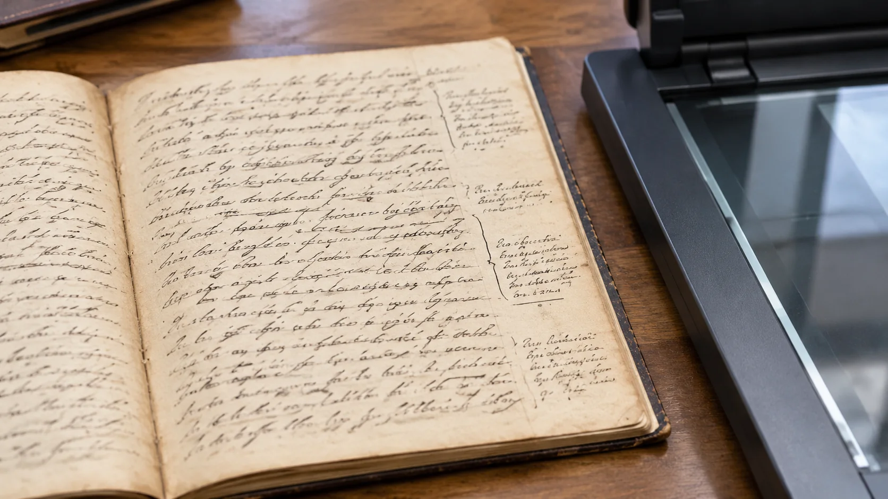

西安旧手稿的页边批注，与正文一起扫描时容易漏掉什么
页边字较小，装订处又可能出现阴影。扫描正文看着清楚，旁注却未必完整，保存前最好单独检查一下。

先检查边缘有没有被截去
西安模仿笔迹参考中的页边批注，可能紧贴纸边或装订处。扫描时保留完整范围，检查左右边缘、顶部和下角，不要只确认正文在画面中心。自动裁边有时会把浅色小字当作空白去掉，导出后应查看实际文件，而非只看软件预览。
装订阴影与文字分开判断
靠近装订处的纸面可能弯曲，线条看起来变窄或失焦。局部补图应注明原页和位置，不能为了拍平而自行拆动不便处理的旧材料。原图与阅读副本分别保存，清楚说明哪些区域仍受阴影影响，比把整页背景一键漂白更有帮助。
旁注不等同于正文署名
模仿签名、模仿签字参考若来自页边姓名，首先需要确认它是不是自然落款，而不只是正文中的姓名记载。不能因为字面相同就当成同一类材料。能确认作者与形成背景时写清，无法确认的保持未知，避免目录先入为主地改变材料定位。
目录可以按区域定位
笔迹鉴定资料中，同页正文和旁注可使用同一个页码，再加位置说明。补充近照不需要另算一页独立样本，也不把不同来源的局部重新拼成完整页。图像、编号与背景对应准确，后续阅读才不会因为边缘信息缺失反复找错文件。